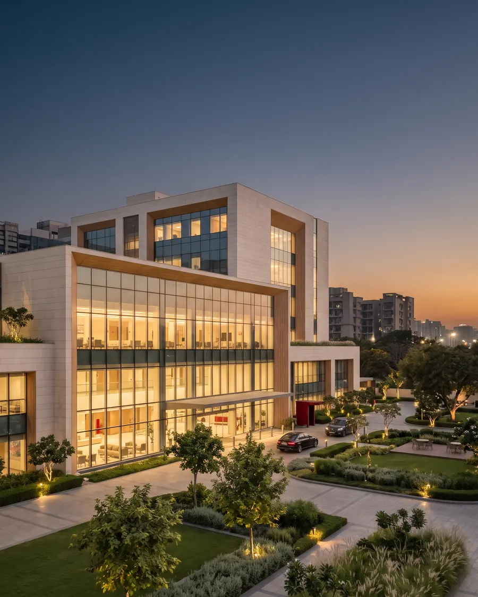
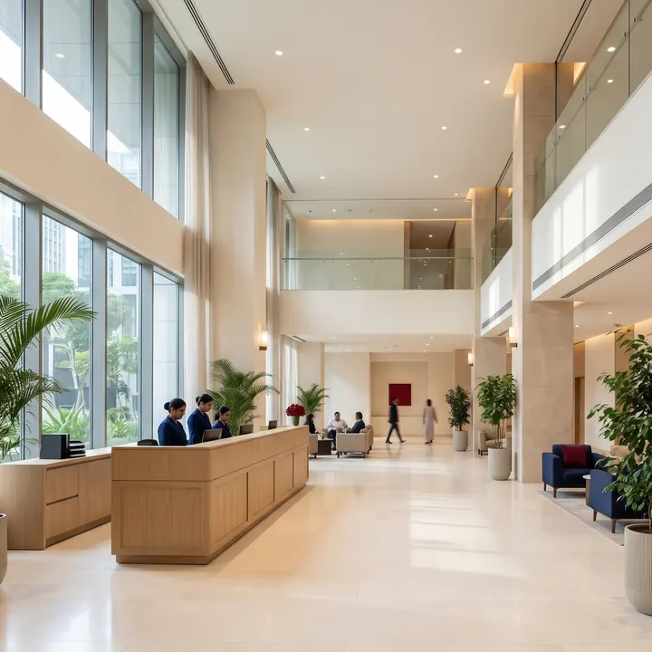

Hospital development and management · India
Hospitals built, revived and run by people who have done it before
White Sage builds new hospitals, takes over and turns around existing ones, and advises healthcare owners, with a senior team that averages more than 20 years in healthcare.
- 20+ years of healthcare experience, on average, in the senior team
- 80+ hospitals operated
- 10,000+ hospital beds' network managed


Multi-specialty hospitalsMany specialities under one roof
Cancer care and women’s healthFocused single-specialty centres
Medical collegesTeaching institutions
Plan to day-to-day runningBuild, revive, advise and manage
What we do
Three ways we work with hospitals
From an empty plot to a hospital in full swing, and from a struggling hospital to a healthy one.
Taking over and reviving hospitals
New life for hospitals that are underperforming or out of date.
How it worksStart here
Where is your hospital today?
Pick the line closest to where you are. You will see the route White Sage takes from there.
Building new hospitals
White Sage develops new healthcare facilities from scratch and handles every part of the work, from strategic planning and design to construction and launch. It works with experienced hospital architects and construction experts so that each new hospital is planned for good care and efficient running from day one.
- Strategic planningWhat to build, where, and for whom.
- DesignWorking with hospital architects on layout and flow.
- ConstructionBuilding with construction experts to the plan.
- LaunchOpening the hospital and setting it to work.
Taking over and reviving hospitals
White Sage takes over and transforms hospitals that are underperforming or outdated. The work starts with a full assessment, then makes planned improvements to operations, infrastructure and patient care, bringing the hospital up to modern standards.
- AssessmentA complete look at how the hospital runs today.
- OperationsBetter processes and day-to-day running.
- InfrastructureUpgrading buildings, equipment and systems.
- Patient careRaising the standard of care and the patient experience.
Advisory and consulting
White Sage advises healthcare providers on strategic planning, operational management and analysis. With a network of specialists it offers joined-up help at every stage, from design to growth.
- Strategic planningDirection, markets and the business case.
- Operational managementHow the hospital is organised and run.
- Analytical insightsDecisions backed by the numbers.
- GrowthExpanding services and reach, step by step.
Experience in numbers
A senior team that has done this before
20+years of healthcare experience, on average, in the senior team
80+hospitals operated
10,000+hospital beds' network managed
Figures as published by White Sage.
Leadership
The people who lead White Sage
Hospital operators, finance leaders and project builders from Fortis, Medanta, CARE, Max, Deloitte and BCG.


Dr Shekhar N. Harvyasi
CEO, Amar Jain Hospital (WHC), Jaipur
25+ years of experience
Read profile of Dr Shekhar N. HarvyasiOur hospitals
Part of the White Sage network
(opens in a new tab)
Forbaxy Hospital
Amar Jain Hospital, Amrapali Circle, Vaishali Nagar, Jaipur
Part of the White Sage network, Forbaxy brings advanced medical care, experienced specialists and patient-first treatment under one roof. It operates from Amar Jain Hospital, which is accredited by NABH.
Visit forbaxy.com (opens in a new tab)The name
What White Sage stands for
What sets White Sage apart is its access to key healthcare resources and the depth of its team's experience: the means to run hospitals efficiently, improve patient care and grow sustainably.
White
Transparency and ethical integrity in everything the business does.
Sage
The wisdom that comes from many years of experience in healthcare.
Have a hospital to build, revive or grow? Let’s talk.
Tell us where things stand today. A senior member of the team will get back to you, usually within 24 hours.